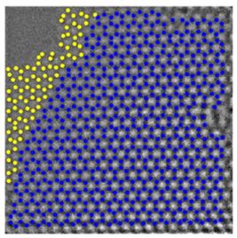
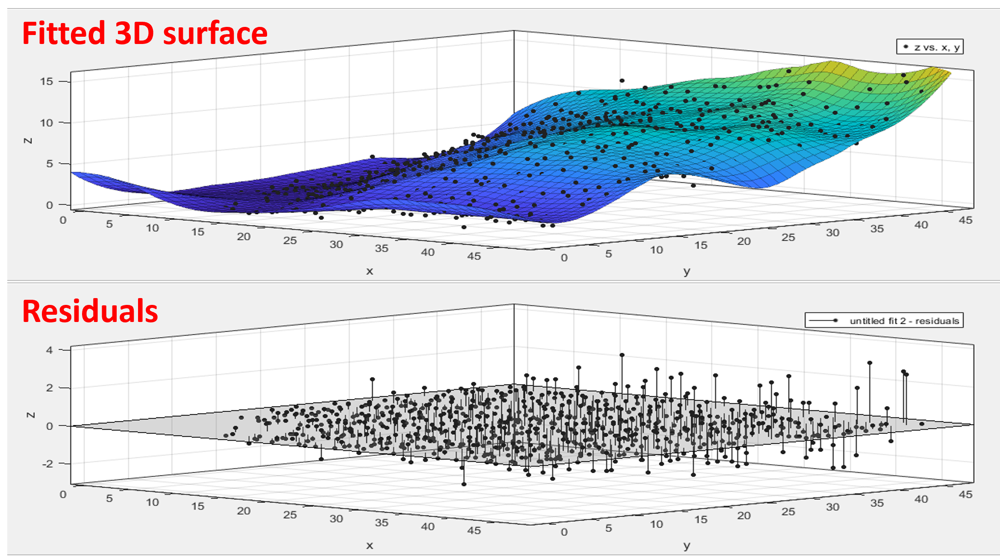

AI-Assisted 3D Reconstruction of Graphene
Denoising • Statistical Estimation • Optimization • Atomic & Electronic Analysis
Denoising • Statistical Estimation • Optimization • Atomic & Electronic Analysis
This project develops a complete computational pipeline to reconstruct the three-dimensional atomic structure of free-standing graphene from low-dose TEM images. The workflow integrates machine learning, statistical inference, and physics-based optimization to recover atomic coordinates and analyze their electronic implications.
Low-dose TEM images of graphene with high noise and limited signal.
Sparse coding–based denoising using learned atomic patterns.
Gaussian fitting & MAP inference for initial 3D coordinate estimation.
LOWESS regression to smooth atomic surfaces and remove outliers.
Simulated Annealing + Molecular Dynamics to optimize atomic stability.
Implemented a sparse coding and K-SVD dictionary learning algorithm to suppress noise in low-dose TEM images while preserving atomic contrast. The learned dictionary captures local atomic patterns, outperforming conventional Gaussian and median filters.

Raw low-dose TEM image

After Dictionary Learning Denoising
Applied Gaussian fitting and the Maximum a Posteriori (MAP) rule to estimate atomic coordinates from denoised intensity peaks. The probabilistic model accounts for imaging uncertainty and beam distortion, providing robust 3D initialization for subsequent optimization.
Utilized locally weighted regression (LOWESS) to fit atomic z-coordinates, producing a smooth continuous graphene surface while preserving curvature features from defects and ripples.
The reconstructed coordinates were refined by minimizing the energy function between experimental and simulated images using Simulated Annealing. Each iteration integrates Molecular Dynamics (LAMMPS) to ensure physically stable atomic arrangements.
Graphene dynamics under the interaction with the electron beam
Analyzed reconstructed atomic structures and corresponding electronic properties using Density Functional Theory (DFT). The study revealed that ripple amplitude and local curvature significantly influence graphene’s band structure and electron mobility.